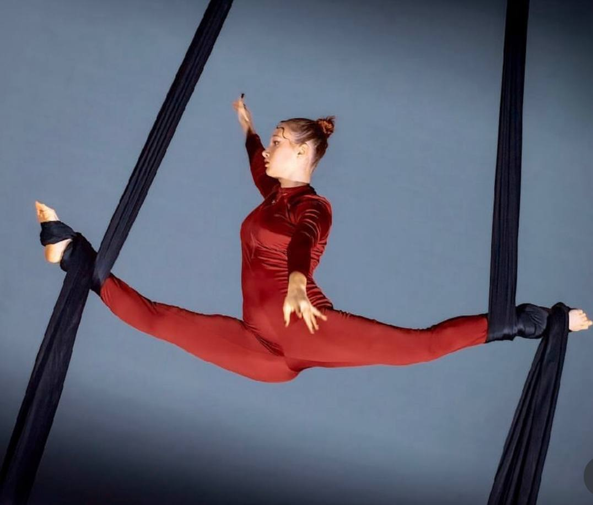

Why I love my sport
I like to do sports because it brings me pleasure and strength, or when you need to work hard to achieve success. I will show you the sports I have been involved in and which sport I give the most importance to.
The first sport I tried at the age of 4 was figure skating. Before that, there were other sports, but they were minor. I was engaged in figure skating for 5 years, but when I was 9 years old, I became interested in acrobatics and that was the end of my figure skating career. I had a 2nd degree master of sports in Ukraine, but unfortunately, this line ended and when I came to Canada, I resumed figure skating, but it didn't end very positively because I got injured and had knee surgery. I am still interested in this sport, but at the moment my knees are not very reliable.
Gymnastics I found this sport when I went to a gymnastics class, that was the beginning of everything, then I got interested in acrobatics in a club and I did acrobatics 4 months after that, this club opened a new sport, aerial gymnastics, I became very interested in it and now I do it. I spent 6 years of my life on gymnastics, but unfortunately I wanted to try something new, so I decided to go dancing.
I've known dancing for a long time, but it never seemed to fade. When I was 2 years old, I was dancing hip-hop style, it was just for fun. But now, after I started liking K-pop music, I started to really watch them and their movements, animate and repeat them, and I liked it, so I decided to go dancing. I like that I can control my body and how smoothly or quickly I can dance.